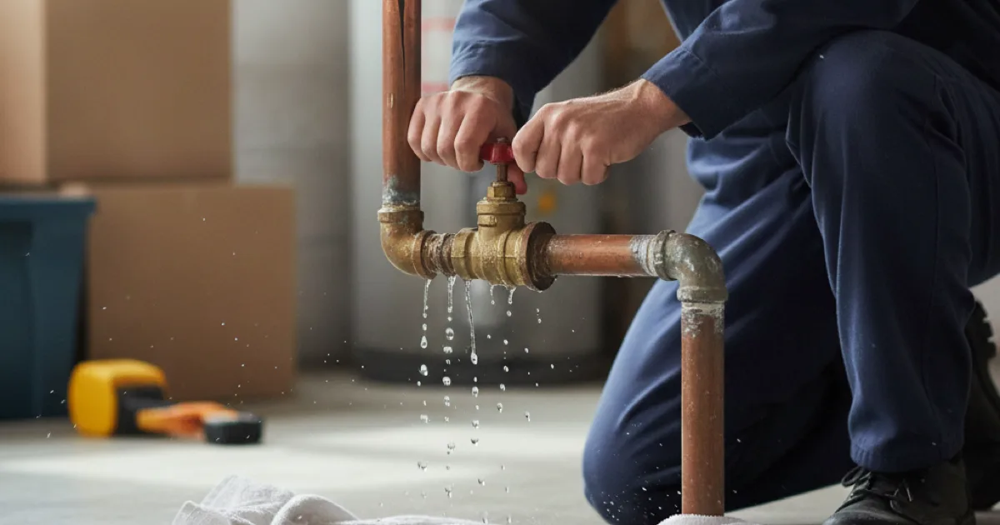

Burst Pipe Repair in Westchester County, NY
A burst pipe puts a remarkable amount of water into a house in minutes. What you do in the first two is worth more than how fast anyone drives — so here is that part first.
- Licensed & Insured
- Same-Day Service Available
- Emergency Plumbing Available
- Upfront Pricing

First two minutes
- Shut the water off. The main valve if you can find it — usually in the basement or utility area on the wall facing the street, near the meter. A fixture valve if the burst is clearly at one fixture. This one step limits the damage more than anything else.
- Open a low tap. A ground-floor or basement faucet drains the remaining water in the pipes downward, away from the burst, rather than out of it.
- Cut power to any circuit near the water, at the breaker, but only if you can reach the panel without standing in water.
- Move what you can and put towels down. Then stop — pulling up flooring or opening walls now rarely helps and can make the source harder to trace.
- Call us. With the water off, you have turned an emergency into an urgent-but-controlled situation.
If you cannot find or turn the main valve, call and we will talk you through it. Knowing where yours is before you ever need it is one of the more valuable five minutes you can spend as a homeowner.
Why pipes burst here
Around here the causes are fairly seasonal, and the season usually tells you which one you are dealing with.
Freezing. The big one in winter. Water expands as it freezes, and the pressure that builds between the ice and a closed tap splits the pipe — often not at the frozen spot itself. Pipes in exterior walls, unheated garages, and crawlspaces are the usual casualties, and the split frequently is not discovered until a thaw gets the water moving again. That overlap with a frozen pipe that has already let go is why the two problems arrive together every January.
Corrosion and age. Older supply pipe thins from the inside until it fails at a weak point, usually a joint or bend. This is the year-round cause, and unlike freezing it gives little warning.
Pressure. Excessive water pressure stresses the whole system and finds the weakest fitting. A pressure regulator that has failed can push a system well past what it was built for.
Water hammer. Years of pipes banging when taps and appliance valves shut abruptly fatigues joints until one gives.
Bob Vila has a practical rundown of what to do the moment a pipe bursts — documenting the cause and stopping the water are the two things that matter most, both for the repair and for any claim.
What the repair involves
- Confirm the water is contained. If it is still running when we arrive, that comes first.
- Find the actual burst. Water travels along joists and pipe runs, so where it appears is often not where it split.
- Assess the pipe either side. A burst from freezing in otherwise sound pipe is a contained repair. A burst from corrosion means the rest of that run is the same age and condition — worth an honest conversation.
- Repair or replace the section. Cut back to sound pipe, make it up properly, and support it so the repair is not under strain.
- Restore and test. Water back on gradually, every joint checked under pressure.
If a burst reveals that a whole run is on the edge of failing, patching one hole is a false economy, and replacing a run that keeps failing may be the honest answer. We will show you what we found and let you decide, rather than deciding for you by quietly patching and moving on.
What affects the cost of the repair
A burst pipe repair is priced on what actually failed and how hard it is to reach, and we give you that number before we start. The pipe itself is rarely the expensive part.
What moves it: how much wall, ceiling, or floor we have to open to reach the burst; whether the surrounding pipe is sound or also failing and worth replacing while we are in there; the material, since old galvanised or polybutylene changes the job; and whether the failure was a one-off or the first of several on the same run.
Stopping the next one
Most bursts here are preventable, and the measures are cheap against the damage. Insulate pipes in unheated spaces, keep some heat in rooms with plumbing on exterior walls, and on the coldest nights let a tap trickle so water keeps moving.
If a burst turned out to be corrosion rather than freezing, that is worth taking seriously, because the rest of that run is the same age and condition. We will tell you honestly whether it was bad luck or a sign the plumbing is near the end of its life.
Common questions
The water is off and the leak stopped. Do I still need someone today?
You have bought time and probably saved real money, so it may no longer be a middle-of-the-night call. But a burst pipe has not repaired itself — it is simply waiting for the water to come back on. It still needs fixing before you can use that supply.
How do I stop it happening again next winter?
Insulate pipes in unheated spaces, keep some heat in rooms with plumbing on exterior walls, and on the coldest nights let a tap trickle so water keeps moving. Cheap measures against an expensive problem.
Will insurance cover the damage?
A sudden burst is often treated differently from slow, long-term leakage. Stop the water, photograph everything before cleaning up, and keep our invoice. How it is covered is a question for your insurer — we can document what failed.
Can you just patch it so I can turn the water back on?
Sometimes a sound temporary repair gets a household through until a proper fix — and if so we will tell you plainly that it is temporary. We will not present a patch on failing pipe as a finished repair.
Do you handle the drying and damage too?
We stop the water and repair the pipe. Drying, and restoring damaged materials, is specialist work — see our the water damage side and who does which part for how that splits.
Stop the water, then call
Licensed, insured, and quick when it counts.